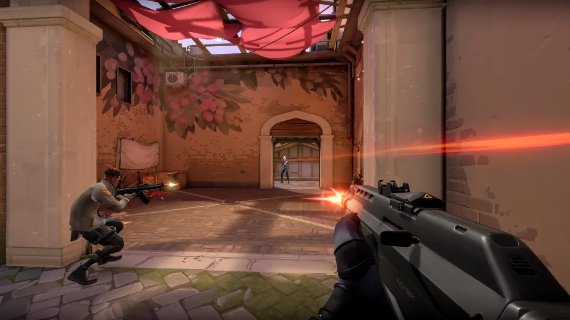
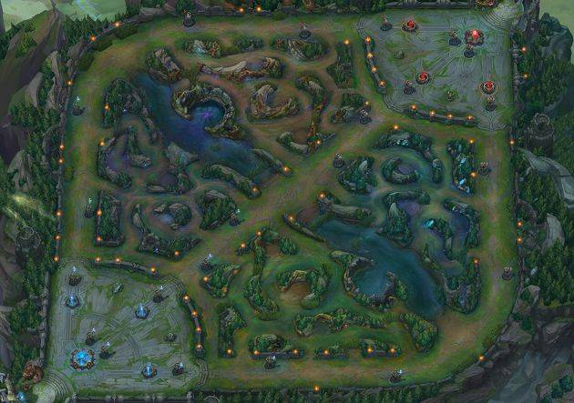
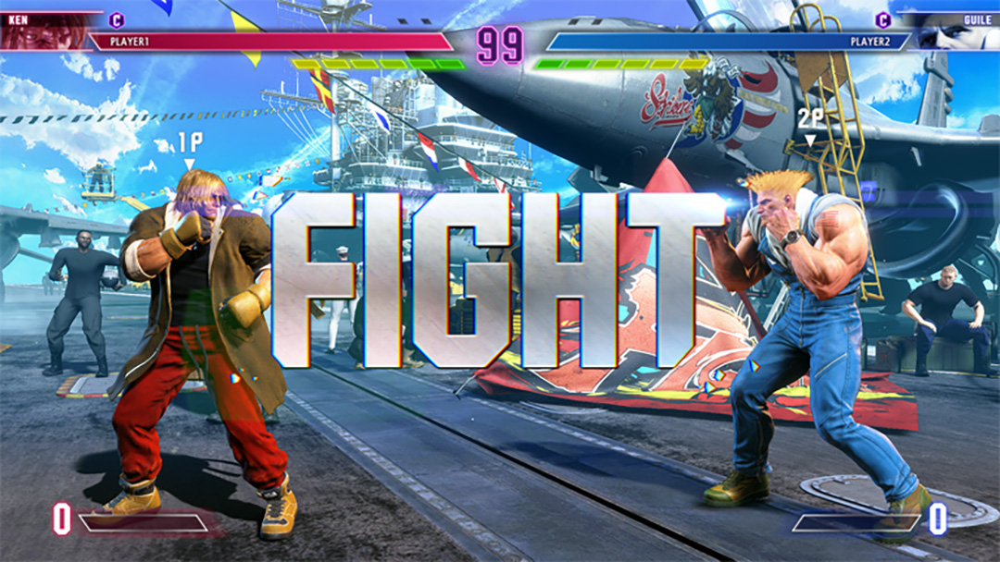

FPS遊戲
第一人稱射擊遊戲(英語：First-person shooter，簡稱FPS)是以玩家的第一人稱視角為主視角進行的射擊類電子遊戲的總稱

MOBA遊戲
多人線上戰鬥競技場遊戲(MOBA，multiplayer online battle arena)。玩家通常會被分為兩隊，以打垮對方隊伍的陣地建築為勝利條件。

競速遊戲
競速遊戲主要是以第一人物或者第三人物參與速度的競爭。競速遊戲可以包含賽車遊戲，還有一些非常規的飛行競速遊戲，特殊競速遊戲。

格鬥遊戲
格鬥遊戲是操縱自己的角色和對手進行近身格鬥。這些角色傾向於設計成實力均衡，並無像一般動作角色扮演遊戲有等級或裝備等強度差異。
